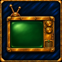

ForeverScreen - Play in WoW
Version
- Start ForeverScreen (the TV icon in the tray).
- Tray menu, Pair browser: it copies the token.
- Paste it below and press Save and test.
How to use
On a YouTube video: the TV button in the player bar, the toolbar icon, or right-click a video or a YouTube link, Play in WoW. The video continues in WoW from the same second and pauses here.
Open the TV in WoW with /fscreen. A video sent while the TV is hidden waits there paused.